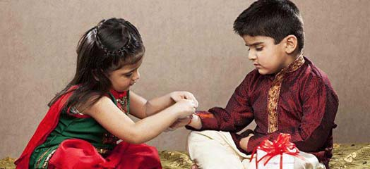

Rakhi is basically a sacred thread of Rakhi is basically a sacred thread of protection embellished with the love and affection of a sister for her brother. This day is also known as Raksha Bandhan and celebrated on the full moon day of the Hindu month of Shravana in India. This frail of thread of Rakhi is considered as stronger than iron chains as it binds the most beautiful relationship in an inseparable bond of love and trust. Rakhi festival also has a social significance because it underlines the notion that everybody should live in harmonious coexistence with each other.
On the day of Rakhi, sisters prepares the pooja thali with diya, roli, chawal, rakhi thread and sweets. The ritual begins with a prayer in front of God, then the sister ties Rakhi to her brother and wishes for his happiness and well-being. In turn, the brother acknowledge the love with a promise to stand by his sister through all the good and bad times.
Raksha bandhan has been celebrated in the same way with the same traditions for many years. Only the means have changed with the changing lifestyle to make the celebration more elaborate and lively. This day has an inherent power that pulls the siblings together. The increasing distances evoke the desire to be together even more. All brothers and sisters try to reach out to each other on this auspicious day. The joyous meeting, the rare family get-together, that erstwhile feeling of brotherhood and sisterhood calls for a massive celebration.